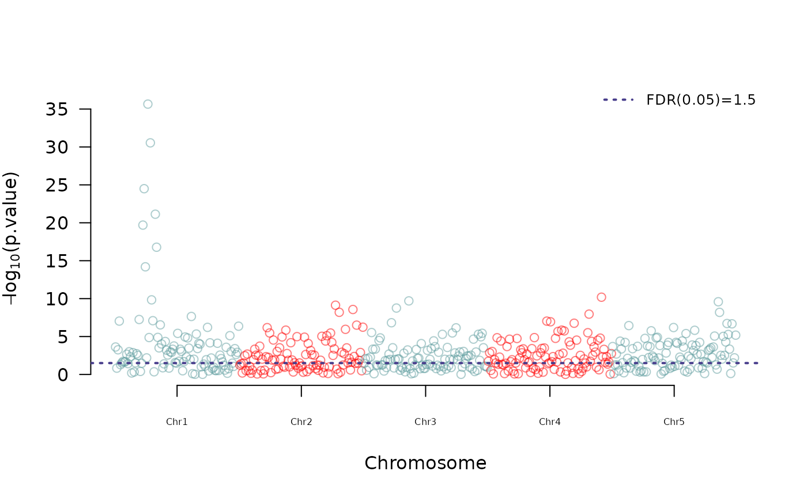

Creating a manhattan plot
manhattan.RdThis function was designed to create a manhattan plot using a data frame with columns "Chrom" (Chromosome), "Position" and "p.val" (significance for the test).
Arguments
- map
the data frame with 3 columns with names; "Chrom" (Chromosome), "Position" and "p.val" (significance for the test).
- col
colors prefered by the user to be used in the manhattan plot. The default is NULL which will use the red-blue palette.
- fdr.level
false discovery rate to be drawn in the plot.
- show.fdr
a TRUE/FALSE value indicating if the FDR value should be shown in the manhattan plot or not. By default is TRUE meaning that will be displayed.
- PVCN
In case the user wants to provide the name of the column that should be treated as the "p.val" column expected by the program in the 'map' argument.
- ylim
the y axis limits for the manhattan plot if the user wants to customize it. By default the plot will reflect the minimum and maximum values found.
- ...
additional arguments to be passed to the plot function such as pch, cex, etc.
References
Covarrubias-Pazaran G (2016) Genome assisted prediction of quantitative traits using the R package sommer. PLoS ONE 11(6): doi:10.1371/journal.pone.0156744
See also
The core functions of the package mmer
Examples
#random population of 200 lines with 1000 markers
M <- matrix(rep(0,200*1000),1000,200)
for (i in 1:200) {
M[,i] <- ifelse(runif(1000)<0.5,-1,1)
}
colnames(M) <- 1:200
set.seed(1234)
pp <- abs(rnorm(500,0,3));pp[23:34] <- abs(rnorm(12,0,20))
geno <- data.frame(Locus=paste("m",1:500, sep="."),Chrom=sort(rep(c(1:5),100)),
Position=rep(seq(1,100,1),5),
p.val=pp, check.names=FALSE)
geno$Locus <- as.character(geno$Locus)
## look at the data, 5LGs, 100 markers in each
## -log(p.val) value for simulated trait
head(geno)
#> Locus Chrom Position p.val
#> 1 m.1 1 1 3.6211972
#> 2 m.2 1 2 0.8322877
#> 3 m.3 1 3 3.2533235
#> 4 m.4 1 4 7.0370931
#> 5 m.5 1 5 1.2873741
#> 6 m.6 1 6 1.5181677
tail(geno)
#> Locus Chrom Position p.val
#> 495 m.495 5 95 3.3390483
#> 496 m.496 5 96 0.1294212
#> 497 m.497 5 97 6.6767607
#> 498 m.498 5 98 1.5189498
#> 499 m.499 5 99 2.1911882
#> 500 m.500 5 100 5.1842328
manhattan(geno)
